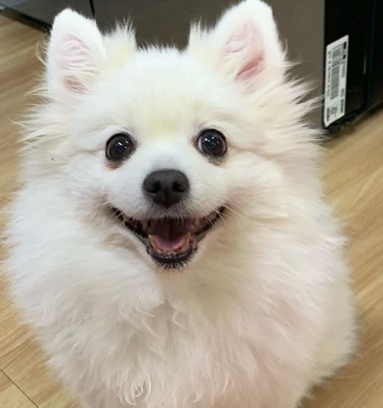

안녕하세요. 나는 콩이에요. 나는 다섯살. 우리 가족은 5명이에요. 아빠, 엄마, 오빠 그리고 내가 제일 좋아하는 언니와 함께 살고 있어요. 나는 아주 예쁜 폼피츠랍니다.
 우리 아빠는요 나에게 간식을 많이 줘요. 간식을 많이 사와요. 아빠는 아침에 식사를 할 때 저에게 몰래 계란프라이를 떼어주다가 엄마나 언니한테 걸려 혼이 난답니다.
우리 엄마는요 바쁜 언니를 대신해서 산책을 시켜줘요. 엄마는 매우 부지런하답니다. 그래서 저는 엄마가 옷을 입을때마다 산책을 나가려는 건가 싶어 매우 기대하는 눈빛으로 엄마를 쳐다보곤해요. 엄마는 무섭지만 좋답니다.
우리 오빠는요 아침마다 나를 안아줘요. 오빠는 기분이 좋을때는 저를 많이 안아주지만 기분이 나쁠때는 쳐다도 보질 않아요. 언니 말로는 오빠가 제가 오기 전에 다른 강아지한테 매우 못되게 굴었다고 했어요. 조심해야겠어어요.
우리 언니는요 제가 제일제일 좋아해요. 언니가 저를 많이많이 좋아해준답니다. 매일 쓰다듬어주고 예뻐해줘서 저는 사랑받는 강아지에요. 언니가 간식을 줄까봐 저는 매일 언니를 입맛 다시며 쳐다보곤 하는데, 그럴때마다 마음이 약한 언니는 저에게 다이어트를 해야한다고 말 하면서 손으로는 제 간식을 꺼내곤 해요. 후후.